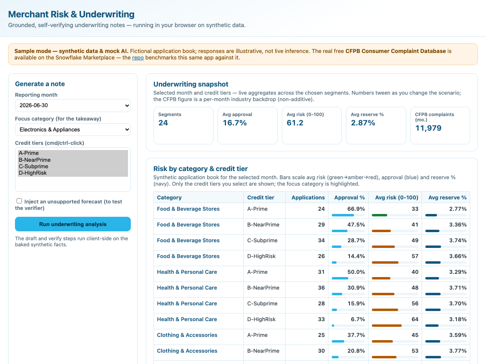
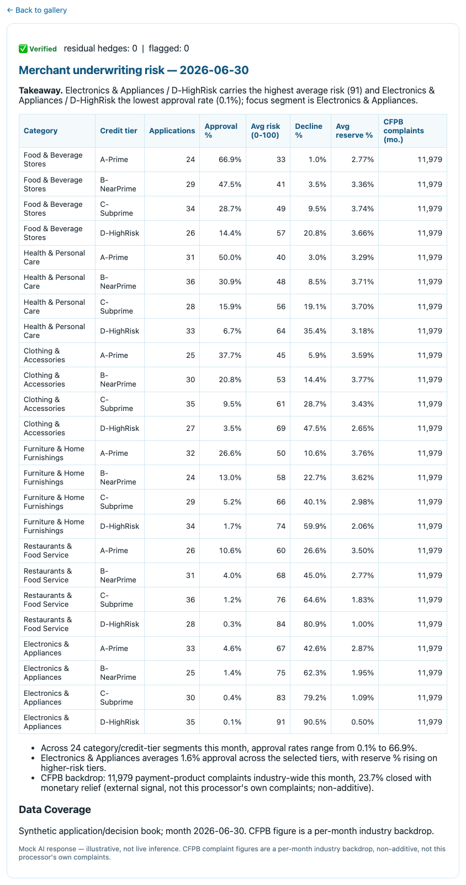

01 / See
A gallery of underwriting notes, each badged Verified or Needs review. Generate one from the application book: approval rate, average risk, and decline rate by merchant category and credit tier.
SNOW PACK · FINANCIAL SERVICES · PAYMENTS
An app that scores every new-merchant application — approve, refer, or decline, with a 0–100 risk score and a reserve % — using only governed application data, cross-referenced against the real CFPB payment-complaint backdrop, and a verifier that refuses to ship an unsupported claim — with a Cortex Agent you can explore in Snowsight.
Runs on a synthetic application book. Mock AI responses are illustrative, not live inference.
Every merchant you board is a risk decision — category, chargeback history, how long they've traded, their credit tier. Teams want an LLM to explain those decisions, but the blocker is always the same: can we trust what it says? This pack shows an agent whose answers are grounded only in governed underwriting data, benchmarked against a real external complaint signal, with a verification step that catches anything unsupported — the difference between a toy and something a risk team will sign off.
A gallery of underwriting notes, each badged Verified or Needs review. Generate one from the application book: approval rate, average risk, and decline rate by merchant category and credit tier.
Explore in your browser on synthetic data — no account, no install. Or run one SQL script in your own account to try it on synthetic tables.
Mount the free CFPB Complaint Database from the Marketplace, run setup.sql, and the same app benchmarks against real US consumer-complaint data. Point it at your own intake with Cortex Code.

